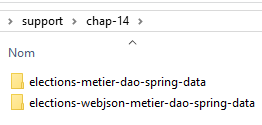
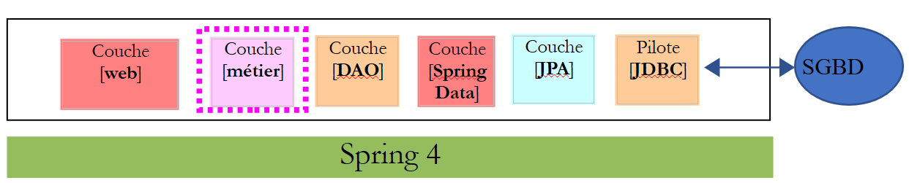
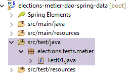
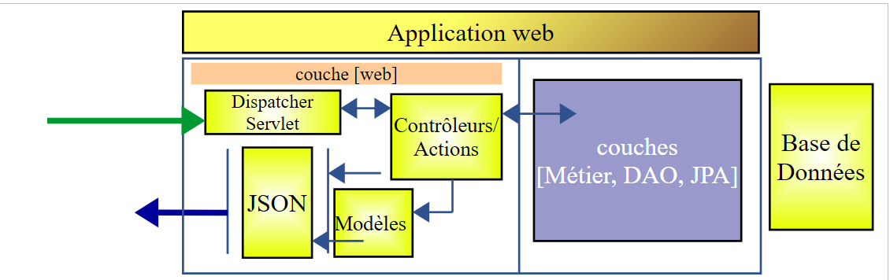
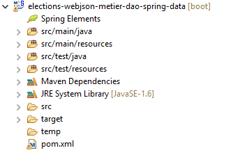
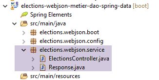
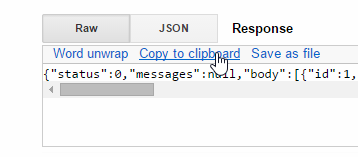
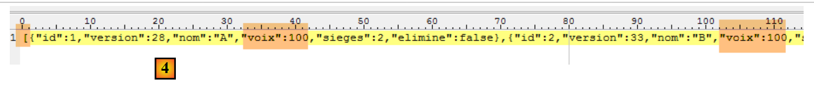
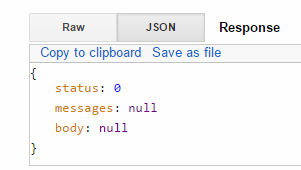
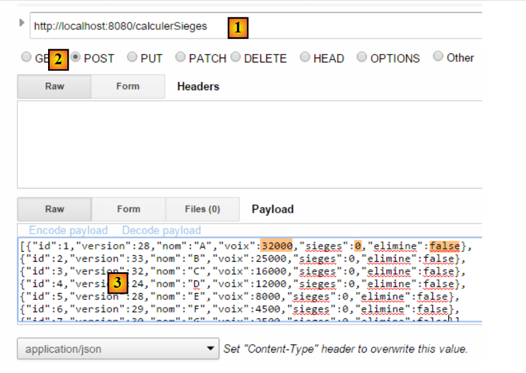

14. [TD]: Web-expositie van de laag [metier]
Trefwoorden: meerlaagse architectuur, Spring, afhankelijkheidsinjectie, webservice / jSON, client / server.
Laten we terugkeren naar de huidige architectuur van de TD-applicatie:
 |
We gaan deze architectuur uitbreiden naar de volgende:
 |
om de interface [IMetier] van de bedrijfslaag op het web beschikbaar te maken. Hiervoor volgen we de methodologie die in paragraaf 13.5 wordt beschreven.
14.1. Support
 |
De projecten van dit hoofdstuk zijn te vinden in de map [support / chap-14].
14.2. Het Eclipse-project van de laag [métier]
 |
 |
14.2.1. Maven-configuratie
Het project van de laag [métier] is een Maven-project dat is geconfigureerd via het volgende bestand [pom.xml]:
<?xml version="1.0" encoding="UTF-8"?>
<project xmlns="http://maven.apache.org/POM/4.0.0"
xsi:schemaLocation="http://maven.apache.org/POM/4.0.0 http://maven.apache.org/maven-v4_0_0.xsd"
xmlns:xsi="http://www.w3.org/2001/XMLSchema-instance">
<modelVersion>4.0.0</modelVersion>
<groupId>istia.st.elections</groupId>
<artifactId>elections-metier-dao-spring-data</artifactId>
<version>0.1.0</version>
<!-- afhankelijkheden -->
<parent>
<groupId>org.springframework.boot</groupId>
<artifactId>spring-boot-starter-parent</artifactId>
<version>1.2.7.RELEASE</version>
</parent>
<dependencies>
<!-- laag [DAO] -->
<dependency>
<groupId>istia.st.elections</groupId>
<artifactId>elections-dao-spring-data-01</artifactId>
<version>0.0.1-SNAPSHOT</version>
</dependency>
<!-- Spring Boot -->
<dependency>
<groupId>org.springframework.boot</groupId>
<artifactId>spring-boot</artifactId>
<scope>test</scope>
</dependency>
<!-- Spring Boot Test -->
<dependency>
<groupId>org.springframework.boot</groupId>
<artifactId>spring-boot-starter-test</artifactId>
<scope>test</scope>
</dependency>
</dependencies>
<properties>
<!-- gebruik UTF-8 voor alles -->
<project.build.sourceEncoding>UTF-8</project.build.sourceEncoding>
<java.version>1.8</java.version>
</properties>
<build>
<plugins>
<plugin>
<groupId>org.apache.maven.plugins</groupId>
<artifactId>maven-surefire-plugin</artifactId>
<version>2.18.1</version>
</plugin>
</plugins>
</build>
</project>
- regels 18-22: de afhankelijkheid van de laag [DAO] die in paragraaf 12 is opgebouwd;
- regels 23-34: de afhankelijkheden die nodig zijn voor de tests;
14.2.2. Spring-configuratie
 |
Het project van de laag [métier] is een Spring-project dat is geconfigureerd via het volgende bestand [MetierConfig]:
package elections.metier.config;
import org.springframework.context.annotation.ComponentScan;
import org.springframework.context.annotation.Import;
import elections.dao.config.DaoConfig;
@Import({ DaoConfig.class })
@ComponentScan({ "elections.metier.service" })
public class MetierConfig {
}
- we gebruiken hier niet de notatie [@Configuration], die van de klasse een Spring-configuratieklasse maakt. De aanwezigheid van de annotaties [@Import, @ComponentScan] maakt er automatisch een configuratieklasse van;
- regel 8: we importeren het configuratiebestand van de laag [DAO]. We beschikken dan over alle beans die in dit bestand zijn gedefinieerd;
- regel 9: andere Spring-beans zijn te vinden in de map [elections.metier.service];
14.2.3. Implementatie van de laag [métier]
 |
De implementatie van de laag [métier] is dezelfde als die welke in paragraaf 8.5 is gedefinieerd.
14.2.4. De test van de laag [métier]
 |
De testklasse is de klasse die in paragraaf 8.6 wordt beschreven.
Te doen: implementeer het project van de laag [métier] en doorloop de unit-test ervan. Genereer het archief van de laag in de lokale Maven-repository (run as/ Maven / install).
14.3. Het Eclipse-project van de laag [web]
 |
De weblaag is een Spring-laag MVC:
 |
Het Eclipse-project heeft de volgende structuur:
 |  |
- [Boot.java] is de klasse die de webservice start;
- [WebConfig.java] is de configuratieklasse van de webservice;
- [Response.java] is het antwoord dat wordt gegenereerd door de verschillende URL-klassen van de webservice;
- [ElectionsController] is de implementatieklasse van de webservice;
14.4. Maven-configuratie
Het project is een Maven-project dat is geconfigureerd via het volgende bestand [pom.xml]:
<project xmlns="http://maven.apache.org/POM/4.0.0" xmlns:xsi="http://www.w3.org/2001/XMLSchema-instance"
xsi:schemaLocation="http://maven.apache.org/POM/4.0.0 http://maven.apache.org/xsd/maven-4.0.0.xsd">
<modelVersion>4.0.0</modelVersion>
<groupId>istia.st.elections</groupId>
<artifactId>elections-webjson-metier-dao-spring-data</artifactId>
<version>0.0.1-SNAPSHOT</version>
<name>elections-webjson-metier-dao-spring-data</name>
<description>couche métier exposée comme un service web / jSON</description>
<parent>
<groupId>org.springframework.boot</groupId>
<artifactId>spring-boot-starter-parent</artifactId>
<version>1.2.7.RELEASE</version>
</parent>
<dependencies>
<!-- bedrijfslaag -->
<dependency>
<groupId>istia.st.elections</groupId>
<artifactId>elections-metier-dao-spring-data</artifactId>
<version>0.1.0</version>
</dependency>
<!-- laag MVC -->
<dependency>
<groupId>org.springframework.boot</groupId>
<artifactId>spring-boot-starter-web</artifactId>
</dependency>
</dependencies>
<properties>
<project.build.sourceEncoding>UTF-8</project.build.sourceEncoding>
<java.version>1.8</java.version>
</properties>
<build>
<plugins>
<plugin>
<groupId>org.apache.maven.plugins</groupId>
<artifactId>maven-surefire-plugin</artifactId>
<version>2.18.1</version>
</plugin>
</plugins>
</build>
</project>
- regels 19-23: de afhankelijkheid van het archief van de laag [métier]. Dit is het archief dat we in paragraaf 14 hebben aangemaakt;
- regels 25-28: de afhankelijkheid voor een Spring-applicatie MVC;
14.5. Spring-configuratie
 |
De klasse [WebConfig] configureert de webservice:
package elections.webjson.config;
import org.springframework.beans.factory.annotation.Autowired;
import org.springframework.beans.factory.config.ConfigurableBeanFactory;
import org.springframework.boot.context.embedded.EmbeddedServletContainerFactory;
import org.springframework.boot.context.embedded.ServletRegistrationBean;
import org.springframework.boot.context.embedded.tomcat.TomcatEmbeddedServletContainerFactory;
import org.springframework.context.ApplicationContext;
import org.springframework.context.annotation.Bean;
import org.springframework.context.annotation.ComponentScan;
import org.springframework.context.annotation.Import;
import org.springframework.context.annotation.Scope;
import org.springframework.web.context.WebApplicationContext;
import org.springframework.web.servlet.DispatcherServlet;
import org.springframework.web.servlet.config.annotation.EnableWebMvc;
import com.fasterxml.jackson.databind.ObjectMapper;
import elections.metier.config.MetierConfig;
@EnableWebMvc
@Import({ MetierConfig.class })
@ComponentScan({ "elections.webjson.service" })
public class WebConfig {
// -------------------------------- configuratie van de [web]-laag
@Autowired
private ApplicationContext context;
@Bean
public DispatcherServlet dispatcherServlet() {
DispatcherServlet servlet = new DispatcherServlet((WebApplicationContext) context);
return servlet;
}
@Bean
public ServletRegistrationBean servletRegistrationBean(DispatcherServlet dispatcherServlet) {
return new ServletRegistrationBean(dispatcherServlet, "/*");
}
@Bean
public EmbeddedServletContainerFactory embeddedServletContainerFactory() {
return new TomcatEmbeddedServletContainerFactory("", 8080);
}
// mapper jSON
@Bean
@Scope(value = ConfigurableBeanFactory.SCOPE_PROTOTYPE)
public ObjectMapper jsonMapper() {
return new ObjectMapper();
}
}
- De betekenis van deze configuratie is uitgelegd in paragraaf 13.5.3.1. We lichten alleen de nieuwe elementen toe:
- regel 22: het configuratiebestand van de laag [métier] wordt geïmporteerd om gebruik te kunnen maken van alle beans daarin;
- regel 23: er wordt aangegeven dat er nog andere beans te vinden zijn in de map [elections.webjson.server.service];
14.6. De startklasse van de webservice
 |
De klasse [Boot] start de webservice als volgt:
package elections.webjson.boot;
import org.springframework.boot.SpringApplication;
import elections.webjson.config.WebConfig;
public class Boot {
public static void main(String[] args) {
SpringApplication.run(WebConfig.class, args);
}
}
- regel 10: de statische methode [SpringApplication.run] zal het configuratiebestand [WebConfig] gebruiken. Vanwege de annotatie [@EnableAutoConfiguration] zal Spring Boot de Tomcat-server starten en de webservice daarop implementeren;
14.7. Het antwoord van de webservice URL
 |
Alle URL van de webservice / jSON sturen hetzelfde type antwoord:
package elections.webjson.service;
import java.util.List;
public class Response<T> {
// ----------------- eigenschappen
// status van de bewerking
private int status;
// eventuele foutmeldingen
private List<String> messages;
// de inhoud van het antwoord
private T body;
// constructors
public Response() {
}
public Response(int status, List<String> messages, T body) {
this.status = status;
this.messages = messages;
this.body = body;
}
// getters en setters
...
}
Deze klasse is in paragraaf 13.5.5.3 besproken en onderzocht.
14.8. De implementatie van de webservice / jSON
De webservice / jSON wordt geïmplementeerd door de volgende klasse [ElectionsController]:
package elections.webjson.service;
import java.util.ArrayList;
import java.util.List;
import javax.servlet.http.HttpServletRequest;
import org.springframework.beans.factory.annotation.Autowired;
import org.springframework.stereotype.Controller;
import org.springframework.web.bind.annotation.RequestMapping;
import org.springframework.web.bind.annotation.RequestMethod;
import org.springframework.web.bind.annotation.ResponseBody;
import com.fasterxml.jackson.core.JsonProcessingException;
import com.fasterxml.jackson.databind.ObjectMapper;
import elections.dao.entities.ElectionsConfig;
import elections.dao.entities.ElectionsException;
import elections.metier.service.IElectionsMetier;
@Controller
public class ElectionsController {
// Spring-afhankelijkheden
@Autowired
private ObjectMapper jsonMapper;
@Autowired
private IElectionsMetier metier;
@RequestMapping(value = "/getElectionsConfig", method = RequestMethod.GET, produces = "application/json; charset=UTF-8")
@ResponseBody
public String getElectionsConfig() throws JsonProcessingException {
// antwoord
Response<ElectionsConfig> response;
try {
response = new Response<>(0, null,
new ElectionsConfig(metier.getNbSiegesAPourvoir(), metier.getSeuilElectoral()));
} catch (ElectionsException e1) {
response = new Response<>(e1.getCode(), e1.getErreurs(), null);
} catch (RuntimeException e2) {
response = new Response<>(1000, getErreursForException(e2), null);
}
// antwoord
return jsonMapper.writeValueAsString(response);
}
@RequestMapping(value = "/getListesElectorales", method = RequestMethod.GET, produces = "application/json; charset=UTF-8")
@ResponseBody
public String getListesElectorales() throws JsonProcessingException {
throw new UnsupportedOperationException("Not supported yet");
}
@RequestMapping(value = "/setListesElectorales", method = RequestMethod.POST, consumes = "application/json; charset=UTF-8", produces = "application/json; charset=UTF-8")
@ResponseBody
public String setListesElectorales(HttpServletRequest request) throws JsonProcessingException {
throw new UnsupportedOperationException("Not supported yet");
}
@RequestMapping(value = "/calculerSieges", method = RequestMethod.POST, consumes = "application/json; charset=UTF-8", produces = "application/json; charset=UTF-8")
@ResponseBody
public String calculerSieges(HttpServletRequest request) throws JsonProcessingException {
throw new UnsupportedOperationException("Not supported yet");
}
// privé-methoden -----------------------------
// lijst met foutmeldingen van een RuntimeException
private List<String> getErreursForException(Exception e) {
// de lijst met foutmeldingen van de uitzondering wordt opgehaald
Throwable cause = e;
List<String> erreurs = new ArrayList<>();
while (cause != null) {
// de melding wordt alleen opgehaald als deze !=null is en niet leeg
String message = cause.getMessage();
if (message != null) {
message = message.trim();
if (message.length() != 0) {
erreurs.add(message);
}
}
// volgende oorzaak
cause = cause.getCause();
}
return erreurs;
}
}
Opdracht: vul, in navolging van wat in paragraaf 13.5.5 is gedaan, de code van de klasse [ElectionsController] aan.
Opmerkingen:
- er zijn hier geen jSON-filters omdat de tabellen [CONF] en [LISTES] niet via een vreemde-sleutelrelatie met elkaar zijn gekoppeld, wat de code van de webservice aanzienlijk vereenvoudigt;
- vergeet niet de verschillende benodigde Spring-annotaties toe te voegen;
- we geven de URL de naam van de bijbehorende methoden;
- de methode [setListeElectorales] wordt aangeroepen met een bewerking [POST]. De verzonden waarde is de array van concurrerende lijsten (van het type ListeElectorale[]) met hun attributen [sieges, voix, elimine], die in de database moeten worden opgeslagen. Deze methode retourneert een type [Response<Void>] met een veld [status=0] als er geen fout is opgetreden, anders iets anders;
- de methode [calculerSieges] wordt aangeroepen met een bewerking [POST]. De verzonden waarde is de array van de deelnemende lijsten (van het type ListeElectorale[]) met hun attributen [nom, voix]. Deze methode retourneert een type [Response<ListeElectorale[]>] met als inhoud de kieslijsten met hun geïnitialiseerde velden [sieges, elimine];
14.9. Tests
Nadat u de webservice hebt gestart, voert u de volgende tests uit om te controleren of de webservice correct werkt met het hulpprogramma [Advanced Rest Client]:
 |
Het antwoord jSON op het vorige verzoek is als volgt: [1]:
 |
1  | 2  |
Kopieer in [2] het antwoord naar het klembord en plak dit vervolgens in een willekeurige teksteditor [3]:
 |
Isoleer de waarde van het veld [body] en wijzig bijvoorbeeld de stemmen van de lijsten. Hieronder [4], worden de stemmen van alle lijsten op 100 gezet:
 |
Controleer of uw tekenreeks jSON begint met [ et se termine par ]. Deze tekens dienen om een tabel jSON af te bakenen. Plak in [5] de bovenstaande tekenreeks jSON. Dit wordt de waarde die wordt verzonden voor de volgende URL. Hiervoor moet de methode HTTP [POST] [7] worden geselecteerd.
 |
- in [6], vraag dan de URL [setListesElectorales] op. Deze URL wordt opgevraagd met een POST. De ingevoerde waarde is de tabel jSON met de wedstrijdslijsten waarvan de resultaten in de database moeten worden opgeslagen;
Het volgende resultaat wordt verkregen:
 |
Het veld [status=0] geeft aan dat er geen fout is opgetreden. Om dit te controleren, vraagt u de wedstrijdlijsten opnieuw op en controleert u of de wijzigingen die u in de lijsten had aangebracht, zijn verwerkt:
 |
We voeren opnieuw een [POST] uit om de behaalde zetels per lijst te berekenen:
 |
- in [1]: de URL van de zetelberekening;
- naar [2]: we maken een [POST];
- in [3]: de deelnemende lijsten. We vullen het veld [voix] met de waarden van TD, alle [sieges]-waarden zijn 0, alle [elimine]-velden zijn false;
Het verkregen resultaat is als volgt:
 |